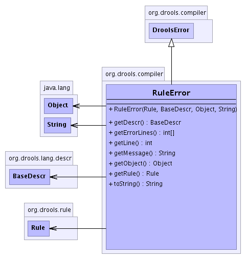

org.drools.compiler
Class RuleError
java.lang.Object
 org.drools.compiler.DroolsError
org.drools.compiler.RuleError
org.drools.compiler.DroolsError
org.drools.compiler.RuleError
public class RuleError
- extends DroolsError
-
- 
|
Method Summary |
BaseDescr |
getDescr()
|
int[] |
getErrorLines()
Returns the lines of the error in the source file |
int |
getLine()
This will return the line number of the error, if possible
Otherwise it will be -1 |
java.lang.String |
getMessage()
Classes that extend this must provide a printable message,
which summarises the error. |
java.lang.Object |
getObject()
|
Rule |
getRule()
|
java.lang.String |
toString()
|
| Methods inherited from class java.lang.Object |
clone, equals, finalize, getClass, hashCode, notify, notifyAll, wait, wait, wait |
RuleError
public RuleError(Rule rule,
BaseDescr descr,
java.lang.Object object,
java.lang.String message)
getRule
public Rule getRule()
getDescr
public BaseDescr getDescr()
getObject
public java.lang.Object getObject()
getErrorLines
public int[] getErrorLines()
- Description copied from class:
DroolsError
- Returns the lines of the error in the source file
- Specified by:
getErrorLines in class DroolsError
- Returns:
getLine
public int getLine()
- This will return the line number of the error, if possible
Otherwise it will be -1
getMessage
public java.lang.String getMessage()
- Description copied from class:
DroolsError
- Classes that extend this must provide a printable message,
which summarises the error.
- Specified by:
getMessage in class DroolsError
toString
public java.lang.String toString()
- Overrides:
toString in class java.lang.Object